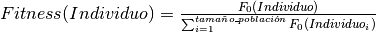
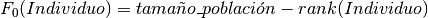
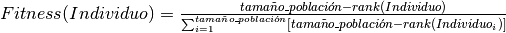

ProportionalFitness (script)¶
Se desarrolla la asignación de Fitness conocida como Proportional (ó Proporcional).
La función (ó fórmula) utilizada es la siguiente:

Donde:
 es conocido como el valor de la función objetivo del Individuo. Nótese
es conocido como el valor de la función objetivo del Individuo. Nóteseque debe ser proporcional al Fitness del Individuo.
debe ser proporcional al Fitness del Individuo.De acuerdo a la información provista anteriormente, la asignación es llamada así porque,
como dice el nombre, el Fitness de un Individuo corresponde a la parte proporcional
de la cantidad total de de la Population (ó Población).
de la Population (ó Población).De esta manera es posible ajustar los valores para que no existan Fitness dispares.
Con respecto de es importante considerar que, dado que se está manejando
un sistema multi objetivo puede haber más de un valor en existencia, por ello se necesita
una cantidad que conjunte estas evaluaciones el cual es el rank, sin embargo el rank es inversamente
proporcional a la calidad de un Individuo.
es importante considerar que, dado que se está manejando
un sistema multi objetivo puede haber más de un valor en existencia, por ello se necesita
una cantidad que conjunte estas evaluaciones el cual es el rank, sin embargo el rank es inversamente
proporcional a la calidad de un Individuo.Entonces se debe hacer una modificación para garantizar que exista un valor
proporcional al Fitness del Individuo, por lo cual se reescribe así:
se reescribe así:
Reescribiendo la fórmula inicial se tiene lo siguiente:

Con esta actualización ya es posible obtener un Fitness acorde al rank del Individuo sin alterar
la esencia de la técnica.
-
assign_fitness(population, fitness_parameters)¶ Se implementa la asignación de Proportional Fitness (ó Fitness Proporcional) con base en la información especificada con anterioridad.